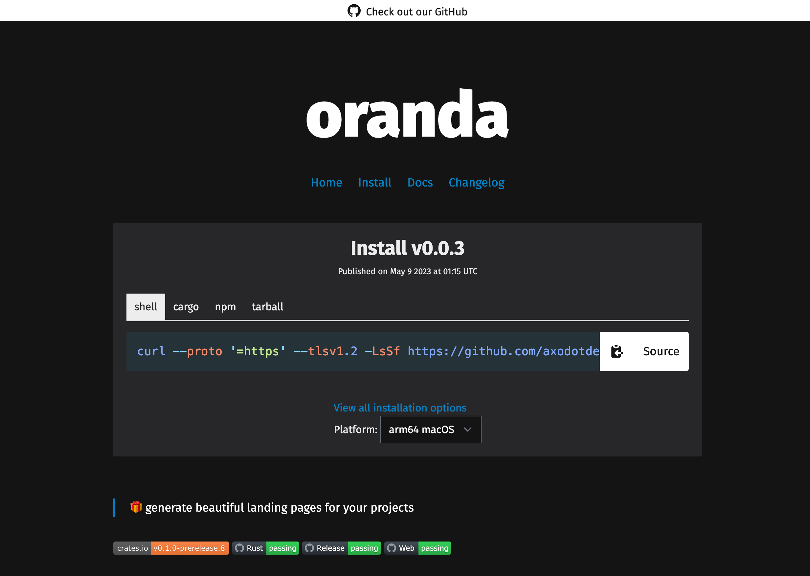
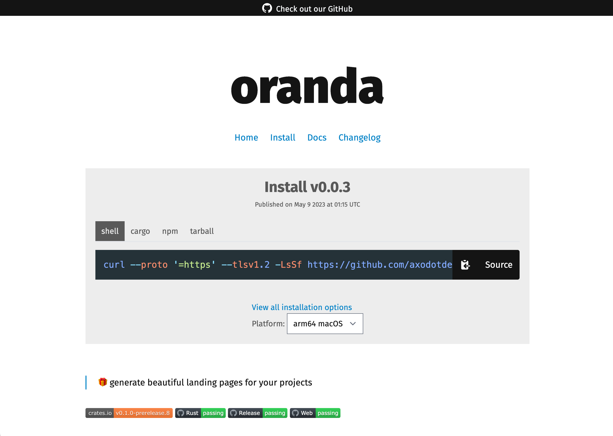
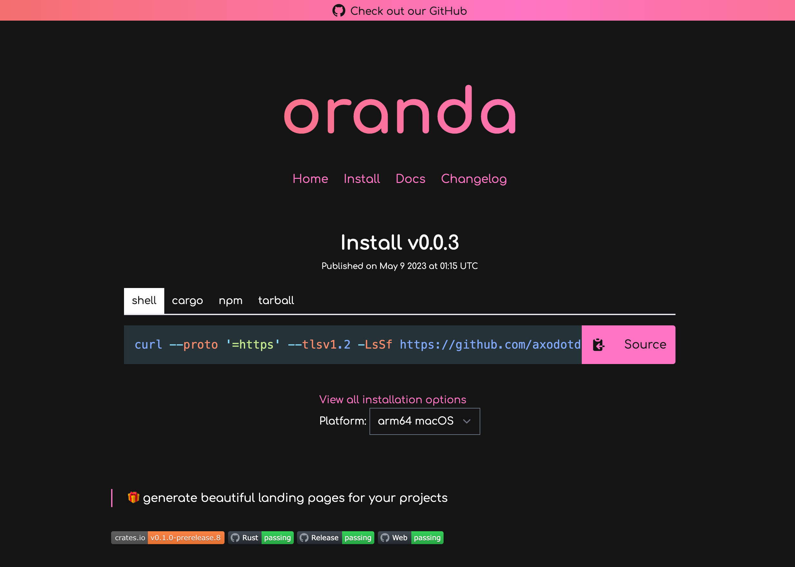
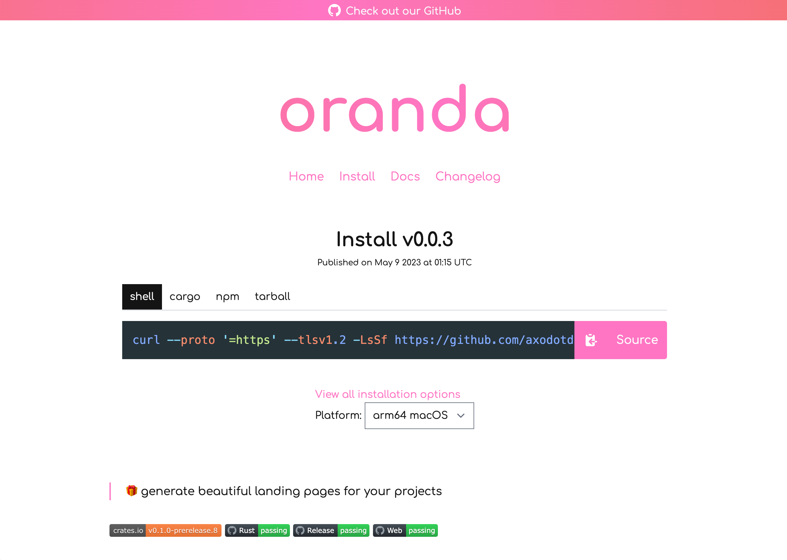
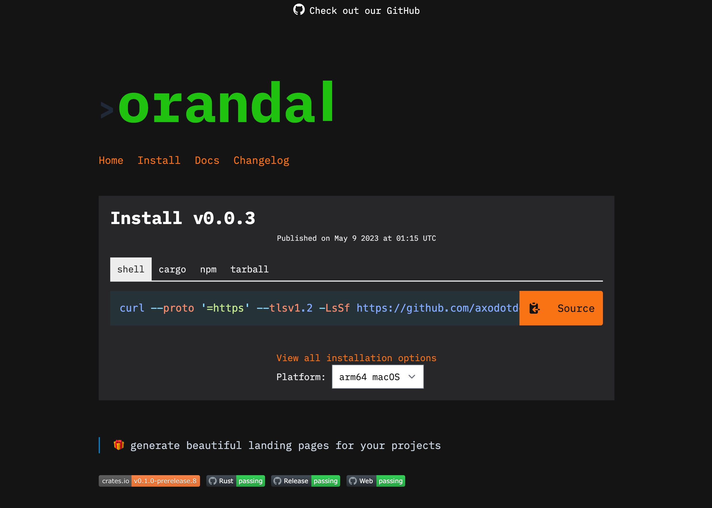
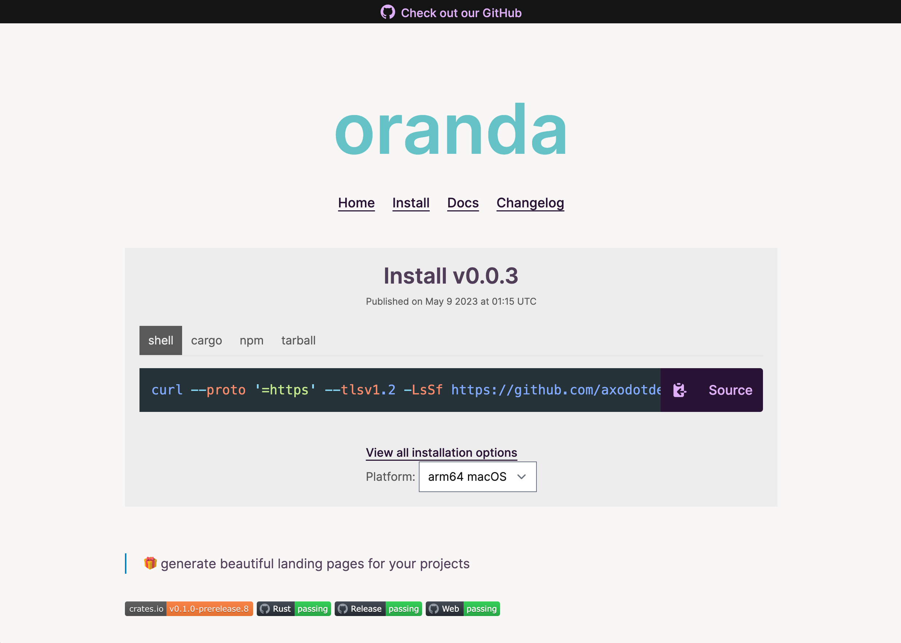

Introduction
Oranda is a tool for generating beautiful landing pages for your projects.
It can:
- Automagically generate a webpage based off your project readme file
- Include arbitrary Markdown pages
- Generate
mdbookbooks for you - Show downloadable and installable artifacts, and ways to install them, by integrating with cargo-dist
- Provide integration with several web analytics providers
and more!
This is the oranda documentation, where we explain how to use the tool in detail. Use the sidebar to the left to navigate between pages.
Caveat emptor! oranda is still beta-quality software! There may be breaking changes at times, especially in the configuration format (although we're working hard on stabilizing it)
Install
There's lots of ways to install oranda!
The Quickest Way
On the oranda website, there's a one-liner command you can execute for your OS that'll download and install oranda for you, without any further hassle!
Install Prebuilt Binaries With cargo-binstall
cargo binstall oranda
Build From Source With Cargo
cargo install oranda --locked --profile=dist
--profile=distis the profile we build our shippable binaries with, it's optional.
--lockedasks Cargo to respect the lockfile, improving build reproducibility at the cost of not getting any bugfixes from newer releases of its dependencies.
Download Prebuilt Binaries From GitHub Releases
Install With NPM
npm install @axodotdev/oranda
# alternatively:
npx @axodotdev/oranda build
Install With Nix
oranda is available in nixpkgs, and also as a nix flake. This installer is currently experimental, so we don't recommend you use it in production workflows.
On a system with nix installed, you can run
nix-env -i oranda
or to install from GitHub using the flake,
nix profile install github:axodotdev/oranda
Quickstart
After you've installed oranda, it's time to give it a spin. Make sure you can execute the
oranda command, its output should look something like this:
$ oranda
🎁 generate beautiful landing pages for your projects
Usage: oranda [OPTIONS] <COMMAND>
Commands:
build Build an oranda site
dev Start a local development server that recompiles your oranda site if a file changes
serve Start a file server to access your oranda site in a browser
generate Generate infrastructure files for oranda sites
help Print this message or the help of the given subcommand(s)
Options:
-h, --help
Print help (see a summary with '-h')
-V, --version
Print version
GLOBAL OPTIONS:
-v, --verbose
Whether to output more detailed debug information
--output-format <OUTPUT_FORMAT>
The format of the output
[default: human]
Possible values:
- human: Human-readable output
- json: Machine-readable JSON output
Since oranda is designed to work without configuration, the quickest start is to just run oranda dev in an
existing project! This will spawn a web server that serves your site, plus an extra process that watches for
changes in files relevant to oranda's build process.
NOTE: Prior to version 0.5.0, oranda expects there to be a README.md file in your root directory!
In a Cargo project
oranda integrates with Cargo projects seamlessly. oranda build will pick up relevant
metadata from your Cargo.toml file automatically, including cargo-dist configuration,
if you have that set up.
In a Node project
If you use Node.js, oranda can not only be installed via npm, but also supports reading metadata
from your package manifest file. Additionally, npm scripts make it easy to integrate oranda into
your workflows, for example like this:
{
"scripts": {
"build:site": "oranda build"
},
"dependencies": {
"@axodotdev/oranda": "~0.3.0"
}
}
Further Steps
- Explore the
orandaconfiguration options - Host your site, on GitHub Pages or elsewhere
- Read the CLI docs
- Learn more about hosting
orandasites
Hosting
On GitHub pages
Added in version 0.4.0.
You can use oranda generate ci --ci=github to write a CI file for deploying your main branch to GitHub Pages.
When hosting on GitHub Pages, depending on the name of your repository, your site may get served at different URLs:
- If your repo name is
<user/org>.github.io, your site will be at that URL - If you repo name is anything else, it'll be at
<user/org>.github.io/<reponame>.
For the latter case, you'll need to configure oranda to write its links to your oranda.json (more on that on chapter 8) with <reponame> as a prefix:
{
"build": {
"path_prefix": "reponame"
}
}
This will cause, for example, a link to /changelog/ to be written as /reponame/changelog/.
Elsewhere
oranda is, effectively, a static site generator. It outputs HTML, CSS and JavaScript files. These can all be hosted on a looooot of different platforms, in fact, too many for us to enumerate here! You can use Vercel, Netlify, any GitHub pages competitor, or you can plop it on your own server that runs nginx, Apache httpd, Caddy, or anything else!
You can, in fact, also use the CI generated by oranda generate ci linked above and modify it to deploy to different
platforms. If you do, we'd love to hear about it!
Adding static assets
If you reference static assets in your Markdown, you'll need to place them all inside a directory at the same level as
your project manifest file called static. This is because Oranda currently doesn't know about each indidivual asset,
and instead just copies the folder where they're contained.
In your Markdown, you'll need to refer to the assets in this directory. For example:

If you want to use a custom-named directory you can configure this in your oranda.json, like so:
{
"build": {
"static_dir": "assets"
}
}
In this case the assets directory will be used instead of the default static directory.
Command Line
Oranda currently has four subcommands that work in similar, but nuanced ways.
Oranda supports some common options on each command:
--verbose. This controls the verbosity level for logs.--output-format. If you want JSON for processing it with a machine, this is where you'd toggle it.
oranda build
This command builds your oranda site. You can pass the --json-only flag in order for oranda to only build an
artifacts.json file that can be read by other tools (or websites) for integration purposes. You can also specify
--config-path if your configuration file is not ./oranda.json, but oranda will still look for an
oranda-workspace.json in the current directory.
oranda serve
This command launches a small axum-powered server that serves your generated oranda site.
Importantly, this does not build your site for you. If it can't find a build in the public/ directory,
it will error and exit. You can set the port for the server to be launched using the --port option.
oranda dev
This command basically combined oranda build and oranda serve, with the added benefit of watching for changes
and recompiling automatically. When you launch, what happens is this:
- Oranda builds your site (unless you told it not to)
- Oranda launches a server similar to
oranda serve - Oranda starts watching its relevant files for changes, and will rerun the build process when something changes
Oranda's build can have a lot of side-effects (reading/writing files, but also talking to the GitHub API), and as such, we have to take care to only run the build process when relevant files change. These files are:
- Your project manifest files (
Cargo.toml,package.json) - Your oranda configuration file
- Any mdbook source files you may have
- Your readme, and additional files specified in the configuration
- Files immediately relevant to certain components oranda renders (funding, for example)
- Any other paths you give it using
--include-paths
This command also supports several options:
--portto set a custom port for the file server--config-pathto specify a custom path for your oranda config (but oranda will still look for anoranda-workspace.json) in your current directory).--no-first-buildto skip the first step mentioned above where oranda builds your site before starting the watch process-i,--include-pathsto specify custom paths for oranda to watch
oranda generate
Added in version 0.4.0.
This command generates files useful for working with oranda. Currently, it only supports one subcommand.
oranda generate ci
Generates a CI file that deploys your site. Supports the following options:
-o, --output-path: Specify a path for the file to be written to. Default:.github/workflows/web.yml-s, --site-path: Specify a path to your oranda site, in case it's in a subdirectory to your repository--ci: Specify which CI platform to use. Currently only accepts and defaults togithub, which deploys to GitHub Pages using GitHub Actions.
You can rerun this command to update the CI file based on what we currently recommend as the best workflow, but also
to, for example, update the oranda version that the CI uses (which will always be the oranda version you run
generate with).
Tips and Tricks
Hiding the Markdown title
Oranda breaks out your project's title into its own header, which can be annoying if you've started your own README.md with something like this:
# myprojectname
Blah blah blah etc
If you build your oranda site like this, the title will appear twice! oranda supports a special class called oranda-hide
that you can wrap your title (or whatever you don't want to appear on the page) with, like this:
<div class="oranda-hide">
# myprojectname
</div>
Blah blah blah etc
Keep in mind the line breaks before and after the HTML, otherwise the Markdown parser may not function correctly.
Configuration
oranda is designed to work with no configuration- for projects with a
package.json or Cargo.toml, oranda will grab the project metadata it needs
from your project manifest file. It can also infer a lot of the things it wants to
render from your already existing environment.
If you project has both a Cargo.toml and a package.json we recommend defining
project metadata fields like name in your oranda.json.
Manifest file: oranda.json
If you'd like to customize your project you can do so in a oranda.json file.
For example:
{
"build": {
"path_prefix": "oranda"
},
"styles": {
"theme": "axodark",
"favicon": "https://www.axo.dev/favicon.ico"
},
"marketing": {
"social": {
"image": "https://www.axo.dev/meta_small.jpeg",
"image_alt": "axo",
"twitter_account": "@axodotdev"
},
"analytics": {
"plausible": {
"domain": "opensource.axo.dev"
}
}
},
"components": {
"changelog": true,
"artifacts": {
"package_managers": {
"preferred": {
"npm": "npm install @axodotdev/oranda --save-dev",
"cargo": "cargo install oranda --locked --profile=dist"
},
"additional": {
"npx": "npx @axodotdev/oranda",
"binstall": "cargo binstall oranda",
"nix-env": "nix-env -i oranda",
"nix flake": "nix profile install github:axodotdev/oranda"
}
}
}
}
}
NOTE: All paths in
oranda.jsonare relative to theoranda.jsonfile.
See the configuration reference for a detailed explanations of all options!
Workspace manifest file: oranda-workspace.json
Added in version 0.3.0.
oranda supports building multiple sites at once (referred to as building in a "workspace"). To control this behavior,
you can create a oranda-workspace.json file inside your workspace root. Running an oranda command will pick up this
file, and build the workspace members accordingly.
The workspace file supports all other oranda config keys, which will be passed down to each workspace members.
Read more about workspaces or see the workspace reference
Configuration before 0.1.0
Before version 0.1.0 (the last stable version was/is 0.0.3, the last prerelease was/is 0.1.0-prerelease7), the configuration format looked like this:
{
"name": "oranda",
"description": "generate static sites for your dev tools",
"dist_dir": "oranda_out",
"homepage": "https://oranda.axo.dev",
"static_dir": "static",
"no_header": false,
"readme_path": "dev/README.md",
"repository": "https://github.com/axodotdev/oranda",
"additional_pages": {
"Another page": "dev/additional.md"
},
"favicon": "https://www.axo.dev/favicon.ico",
"analytics": {
"plausible": {
"domain": "tools.axo.dev/oranda"
}
},
"social": {
"image": "https://www.axo.dev/meta_small.jpeg",
"image_alt": "axo",
"twitter_account": "@axodotdev"
},
"artifacts": {
"cargo_dist": true
},
"logo": "assets/oranda.png",
"license": "MIT OR Apache-2.0",
"mdbook": false,
"path_prefix": "oranda",
"styles": {
"theme": "axo_dark"
},
"funding": {
"preferred_funding": "github"
},
"changelog": true
}
Configuration Reference
projectname📦 - the name of your applicationversion📦 - current version of your projectdescription📦 - brief description of your projecthomepage📦 - url to the homepage of your projectrepository📦 - url to the repository of your projectreadme_path- relative custom path to your project's readme filelicense📦 - license of your project (in SPDX format)
builddist_dir- path to where built output should be placedstatic_dir- path to a directory containing static assetspath_prefix- a URL fragment to prepend to URLs, useful if hosting from a subfolderadditional_pages- additional pages to be rendered and linked to
marketingstylestheme- change oranda's CSS themeadditional_css- additional CSS to insert into your pagesoranda_css_version- custom version of oranda's built-in CSS to uselogo- custom site logofavicon- custom site favicon
componentssource- change where oranda pulls your release data fromchangelog- extract your changelog from GitHub automaticallymdbook- let us render a mdbook site for youfunding- configuration for rendering a site related to project funding methodsartifacts- configuration for displaying downloadable artifacts/installers
workspace-oranda-workspace.jsononly!!name- set the overarching workspace nameauto- enable workspace autodetectiongenerate_index- disable generating a workspace index pagemembers- list the workspace membersdocs_path- path to a markdown file to embed into your workspace index pagepreferred_members- list of workspace members to highlight at the top of the index page
📦 = automatically collected from your package metadata!
project
Configuration for metadata about your project. Most of the info in here can be automatically collected for Cargo and npm projects.
project.name
Added in version 0.1.0.
- Type: string, Default: Project manifest
namefield
Your project's name. Will be used for the page title and header.
project.version
Added in version 0.1.0.
- Type: string, Default: Project manifest
versionfield.
Your project's current version.
project.description
Added in version 0.1.0.
- Type: string, Default: Project manifest
descriptionfield
Your project's description. Will be used for site metadata.
project.homepage
Added in version 0.1.0.
- Type: string, Default: Project manifest
homepagefield
Your project's homepage. Will be used for backlinks and site metadata.
project.repository
Added in version 0.1.0.
- Type: string, Default: Project manifest
repositoryfield
Your project's Git repository. If set to GitHub, this enables oranda to fetch data from GitHub releases
(see artifacts)
project.readme_path
Added in version 0.1.0.
- Type: string, Default: A variation of the standard
README.md
The path to your project's readme file. The contents of this will be used for your index page.
project.license
Added in version 0.1.0.
- Type: string, Default: Project manifest
licensefield.
Your project's license. Will be embedded into the page footer.
build
Configuration regarding the specifics of how and where you want your site built.
build.dist_dir
Added in version 0.1.0.
- Type: string, Default:
public/
The directory where your static files will be output to. This must be relative to the oranda.json file.
build.static_dir
Added in version 0.1.0.
- Type: string, Default:
static/
Static content that oranda will copy to its output folder. This must be relative to the oranda.json file.
build.path_prefix
Added in version 0.1.0.
- Type: string, Default: none
If you're hosting oranda on a nested path (e.g. mysite.cool/myproject), you should set path_prefix to
myproject in your configuration in order for oranda to generate correct links. This is specifically useful for
GitHub pages, which, unless the repository name is username.github.io or you have a custom domain set, will host
projects in a subfolder (e.g. username.github.io/projectname, so you'd set this option to projectname).
build.additional_pages
Added in version 0.1.0.
- Type: object, Default: none
An object of additional Markdown pages that you'd like to be included. Links to these will appear in the site header, and they will all be rendered into separate pages.
marketing
Configuration regarding SEO, site metadata, and other "marketing"-related aspects of your page.
marketing.analytics
Added in version 0.1.0.
- Type: object, Default: none
Configuration for page analytics. Can be any combination of the following:
marketing.analytics.google_analytics
Added in version 0.1.0.
- Type: object, Default: none
Set google_analytics.tracking_id to your site tracking ID to include the relevant
snippet to your page.
marketing.analytics.plausible
- Type: object, Default: none
Added in version 0.1.0.
Set plausible.domain to your Plausible domain. Optionally, you can set plausible.script_url
if you're self-hosting.
marketing.analytics.fathom
- Type: object, Default: none
Added in version 0.1.0.
Set fathom.site to your Fathom site.
marketing.analytics.unami
- Type: object, Default: none
Set unami.website to your Unami website identifier, and unami.script_url to the location
where you're hosting your Unami script.
marketing.social
Added in version 0.1.0.
- Type: object, Default: none
Options useful for SEO features.
marketing.social.image
Added in version 0.1.0.
- Type: string, Default: none
An image URL to use for page embeds.
marketing.social.image_alt
Added in version 0.1.0.
- Type: string, Default: none
An alt text for said image embed.
marketing.social.twitter_account
Added in version 0.1.0.
- Type: string, Default: none
Name of a Twitter/X account, to be used for Twitter/X embeds (including the @).
styles
- Type: object
Configuration regarding the looks of your site.
styles.theme
Added in version 0.1.0.
- Type: string, Default:
dark
Choose which built-in theme to use. Possible choices:
dark(default)lightaxodarkaxolighthackercupcake
styles.additional_css
Added in version 0.1.0.
- Type: array, Default: none
An array of local or remote CSS files that will be merged together and loaded into your page.
styles.oranda_css_version
Added in version 0.1.0.
- Type: string, Default: none (current version)
Specify a version of the embedded oranda CSS. This can be used to opt into newer CSS releases that don't have
an oranda release associated with them yet. (Internally, this looks for a oranda.css release artifact on the given
tag in the axodotdev/oranda GitHub repository)
styles.logo
Added in version 0.1.0.
- Type: string, Default: none
Path to a custom logo to be shown in your website header and in your site metadata.
styles.favicon
Added in version 0.1.0.
- Type: string, Default: none
Path to a custom favicon.
components
Configuration regarding extra components/functionality that oranda supports.
components.source
Added in version 0.6.0.
- Type: string, Default:
github
Controls where oranda should pull releases data from. Possible choices are:
github (default)
Attempts to pull release data from GitHub Releases, using the repository specified for your project.
axodotdev
Attempts to pull release data from axo Releases. Since you can have multiple packages under the same project namespace on axo Releases, we use your project's name as the package name.
components.artifacts
Added in version 0.1.0.
- Type: object or bool
Configuration for enabling downloadable artifacts, as well as the cargo-dist integration.
components.artifacts.package_managers
Added in version 0.1.0.
- Type: object, Default: none
A list of "package manager"-like ways to install your app. These will be displayed on your page as extra runnable commands that users can execute to download your project. There's a few different "states" these can be in:
package_managers.preferred- Entries here will be shown in the install widget on your front pagepackage_managers.additional- Entries here will only be shown on the "install" page, but not on the front page
The syntax for both of these is the same:
{
"components": {
"artifacts": {
"package_managers": {
"preferred": {
"user-friendly name": "command to run",
"for example, npm": "npm install @axodotdev/oranda --save-dev"
}
}
}
}
}
components.artifacts.cargo_dist
Added in version 0.1.0.
- Type: bool, Default:
trueif we detected support,falseotherwise
Enables/disables cargo-dist support. oranda may autodetect this if you have cargo-dist
configuration in your Cargo.toml, but you can always explicitly disable it here.
components.artifacts.auto
Added in version 0.2.0.
- Type: bool, Default:
false
Enables/disables artifacts autodetection, even without cargo-dist. This is turned off by
default, but if you provide GitHub release artifacts in a target-triple-like format, chances
are that oranda can autodetect them, so it may be worth turning this on.
components.artifacts.match_package_names
Added in version 0.5.0.
- Type: bool, Default:
false
Only uses release tags that contain the name of the project being generated. Useful in a workspace environment, where multiple published projects are stored in the same repository.
components.mdbook (or components.md_book)
Added in version 0.1.0.
- Type: object or bool
Configuration for mdbook support. You don't need mdbook itself installed to make use of this,
since it also provides a Rust library that we use. oranda will attempt to autodetect
this at several common paths, so you can disable it by setting components.mdbook to false.
components.mdbook.path
Added in version 0.1.0.
- Type: string, Default: none
Path to your mdbook directory, the one containing book.toml, relative to your
configuration file.
components.mdbook.theme
Added in version 0.1.0.
- Type: bool, Default:
true
Whether to enable or disable custom mdbook themes. We try to match your mdbook to
the main oranda page look visually by default, but you can disable this by setting this
option to false.
components.changelog
Added in version 0.1.0.
- Type: object or bool
Enable/disable changelog generation. This is enabled if you have a repository URL set,
and you can disable it by setting false here.
components.changelog.read_changelog_file
Added in version 0.3.0.
- Type: bool, Default:
true
Disables reading the changelog file, meaning that oranda will fall back to embedding the GitHub release body instead.
components.changelog.rss_feed
Added in version 0.5.0.
- Type: bool, Default:
true
Disables the built-in generation of a RSS feed file for your changelog.
components.funding
Added in version 0.1.0.
- Type: object or bool
Allows you to tweak or disable oranda's funding page.
components.funding.md_path
Added in version 0.1.0.
- Type: string, Default: none
Path to a Markdown file which will be embedded into the funding page.
components.funding.yml_path
Added in version 0.1.0.
- Type: string, Default:
.github/FUNDING.yml
Custom path to the GitHub-formatted FUNDING.yml file.
workspace
Configuration for a workspace. This option and its sub-keys will only be honored
in the oranda-workspace.json file, in a normal configuration file, they will be
ignored.
workspace.name
Added in version 0.3.0.
- Type: string, Default: My Oranda Workspace
Set the overarching workspace name. This is optional, and will fall back to "My Oranda Workspace" if not set (not very intuitive, I know).
workspace.auto
Added in version 0.3.0.
- Type: bool, Default:
false
Enables workspace autodetection if set to true. This will cause oranda to attempt to find any Cargo or NPM workspaces
under the current directory, and to attempt to build all of its members (all members must therefore have at least a
readme file). Members manually listed under the members key override these automatically detected workspace members.
workspace.generate_index
Added in version 0.3.0.
- Type: bool, Default:
true
If set to false, does not generate a workspace index page that links between all workspace members. Use this if you
just want to use oranda's workspace functionality to build multiple unrelated sites in one go.
workspace.members
Added in version 0.3.0.
- Type: array, Default: none
An array of objects representing the workspace members.
workspace.members.slug
Added in version 0.3.0.
- Type: string
The URL-safe slug this page will be built at. This needs to be something that can be parsed as a URL, as well as a folder name on your target system (because oranda is a static site generator, after all).
workspace.members.path
Added in version 0.3.0.
- Type: string
The path to the page source. Point this to the same directory that the oranda.json would be in.
workspace.docs_path
Added in version 0.3.0.
- Type: string, Default: none
Path to a Markdown file whose content is going to be rendered into the workspace index file.
workspace.preferred_members
Added in version 0.3.0.
- Type: array, Default: none
A list of workspace member slugs that should be highlighted at the top of the index page. For example:
{
"workspace": {
"auto": true,
"preferred_members": ["projectone", "projecthree"]
}
}
Artifacts & cargo-dist
oranda has first-class support for handling releases, including ones generated by cargo-dist.
It can even detect the user's platform and recommend the best installer/archive to use!
Artifact settings are managed in the artifacts key in your oranda config. This is what an example config looks like:
{
"components": {
"artifacts": {
"package_managers": {
"preferred": {
"npm": "npm install @axodotdev/oranda --save-dev",
"crates.io": "cargo install oranda --locked --profile=dist",
},
"additional": {
"npx": "npx @axodotdev/oranda",
"binstall": "cargo binstall oranda"
}
}
}
}
}
Enabling cargo-dist
oranda will automatically attempt to find a cargo-dist config in your Cargo.toml. If you want to force disable this,
set components.artifacts.cargo_dist to false. Once oranda determines that cargo-dist support should be enabled,
the following will happen:
- oranda will attempt to find GitHub releases generated by
cargo-dist - A new "Install" page will be generated, containing all artifacts and installers for the latest version
- A section to quickly install the latest release for the user's current platform will be added to the homepage
Enabling arbitrary GitHub release support
Even if you don't have cargo-dist set up, oranda can attempt to glean information about your supported targets and
OSes from your GitHub release artifacts. It will attempt to do this if it can find any releases associated with your
repository. It does this by trying to see if it can recognize any known target triples from your filenames, so for example,
it will recognize mytool-aarch64-apple-darwin.tar.gz. If you would like to completely disable this, set
components.artifacts to false (we may offer a more fine-grained setting for this in the future).
Enabling matching a release to a specific package
If you have multiple packages being produced by a workspace and need to match a release to a specific package, you can do
so by setting components.artifacts.match_package_names to true. Upon enabling, while working to determine the latest
release oranda will check if the release tag contains the name of the project being generated. If no match is found
that particular release will be skipped.
Adding package manager installation instructions
You can add custom installation instructions for package managers or package manager-esque methods using the
components.artifacts.package_managers key. These are broken up into two sections:
components.artifacts.package_managers.preferred- methods that you want to be recommended on the front page install widgetcomponents.artifacts.package_managers.additional- methods that should only show up on the dedicated "install" page
All package manager entries are currently treated as "cross-platform", meaning they'll show up in the install widget for any platform you support. We're aware of this limitation, and will likely expand support for this in the future.
Additional Pages
If you have extra Markdown files you'd like to link directly as root pages on your generated website, you can
use the additional_pages option to list them.
The option's format is an object with the human-readable page name as keys, and the path to the file as values. Example:
{
"build": {
"additional_pages": {
"Another page": "./AnotherFile.md"
}
}
}
Analytics
oranda supports automatically inserting the correct analytics snippet your provider into your generated pages.
Right now we support the following analytics providers:
To add any of these, add the required configuration under the analytics key:
Google Analytics
{
"marketing": {
"analytics": {
"google_analytics": {
"tracking_id": "String"
}
}
}
}
Plausible
{
"marketing": {
"analytics": {
"plausible": {
"domain": "String",
"script_url": "Optional string for self hosted"
}
}
}
}
Fathom
{
"marketing": {
"analytics": {
"fathom": {
"site": "String"
}
}
}
}
Unami
{
"marketing": {
"analytics": {
"unami": {
"website": "String",
"script_url": "String"
}
}
}
}
Changelogs
oranda can generate a separate changelog file from either a local CHANGELOG.md file in your repository, or from the body
of GitHub releases. This setting is enabled by default, as long as you have a repository set for your project. To disable this
feature, set it to false in the oranda.json:
{
"components": {
"changelog": false
}
}
By default, oranda will also generate a changelog.rss file which you can plug into RSS readers or other automation!
Controlling where changelogs are read from
By default, oranda will try to read changelog contents from a file called CHANGELOG(.md). This file needs to be formatted
in such a way that it can be parsed, meaning you'll have to specify consistent headers in your Markdown file, like this:
# Changelog
## 0.1.1 - 2023-04-05
- Fixed things
## 0.1.0 - 2023-04-02
### New features
- Fancy thingie
- Other cool stuff
### Fixes
- Beep booping is now consistent
If you would like oranda to use the bodies of GitHub releases that it finds instead, set the following option:
{
"components": {
"changelog": {
"read_changelog_file": false
}
}
}
Even if oranda reads from a local changelog file, it will still try to match those releases to GitHub releases. Make sure that both version numbering schemes are the same between your local changelog and GitHub releases.
For a complete reference of changelog configuration, consult the reference
For workspaces
If you have a workspace, but you would like to opt-out of changelogs for only some members, you'll need
to add manual overrides in those oranda.json files right now.
mdbook support
oranda can generate mdbooks for you. If you've already worked with mdbook, it's as simple as pointing oranda
at your book directory using the mdbook.path option:
{
"components": {
"mdbook": {
"path": "./docs"
}
}
}
This will cause oranda to automatically recompile your book for you, which will be served at the yoursite/book/ URL.
oranda dev will also be watching this directory.
mdbook quickstart
If this is the first time you're working with mdbook, these are the minimal steps you'd need before editing the oranda config. After you've installed the mdbook tool, you can generate a new book scaffold:
mdbook init docs # replace docs with your preferred directory
You can either use oranda dev or mdbook serve docs/ to have a preview for your mdbook.
Social
In order to help with SEO, there are a couple of options you can use.
{
"marketing": {
"social": {
"image": "used as the share image for social media",
"image_alt": "alt for said image",
"twitter_account": "twitter account for the website"
}
}
}
Theming
Predefined themes
Oranda comes with six default themes:
- Light
- Dark
- Axo Light (
axo_lightoraxolight) - Axo Dark (
axo_darkoraxodark) - Hacker
- Cupcake
You can change the theme by adding the styles.theme key to your oranda.json:
{
"styles": {
"theme": "hacker"
}
}
Dark is the default theme.
Customizing Themes
Themes can be further customized by adding extra CSS.
Additional CSS can be added using the styles.additional_css key.
{
"styles": {
"additional_css": ["./local/file.css", "http://www.remote.dev/file.css"]
}
}
Note: Remote files will be copied and the copy served locally, so once a link is updated, the site must be regenerated for changes to take effect.
Adding CSS
Oranda's CSS makes use of cascade layers to scope CSS and make it simpler to override styles. To override themed styles, say on a <p> element, place it inside a layer called overrides.
@layer overrides {
p {
color: aquamarine;
}
}
Alternately, CSS that is not defined within a layer has precedence over all layered CSS, so this will also work.
p {
color: aquamarine;
}
Dark vs. Light
When the dark theme is selected, a dark class is added to the page, and styles to be applied in dark mode only can include this selector. For instance,
.dark p {
color: aquamarine;
}
Will create paragraphs colored aquamarine in dark mode only.
Adding Classes
When there are specific elements you would like to add to your pages, these can be added into Markdown files as raw HTML with class selectors that you can target with your CSS.
<!-- README.md -->
## A Different Kind of Box
<div class="my-border-class">
<p>An outlined box</p>
</div>
.my-border-class {
padding: 1rem;
border: 6px dotted seagreen;
}
Creating a New Theme
Currently, to create a new theme, you need to follow the directions above in "Customizing Themes" and overwrite the given CSS. We recommend continuing the layer approach and placing overrides in the overrides layer and then adding a new named layer for your theme.
The ability to add a different theme directly will be included in future releases. Following the layers approach will make it simpler to transition your theme.
Theme Previews
Here you can see what themes look like without having to set up oranda yourself.
These previews are generated by running oranda on itself.
Dark (default)

Light

Axo Dark

Axo Light

Hacker

Cupcake

Funding page
Oranda has the capability of reading information from your GitHub funding file, and
automatically writing a page based on it. Unless you disable it by setting components.funding to false
in the oranda config file, oranda will search your project for
a .github/FUNDING.yml file, and generate a page based off of it. You can read
more about the format of this file on GitHub's docs.
Oranda will display your different sponsor/funding links next to each other, but if you have a "main" funding option, you can set the following configuration setting:
{
"components": {
"funding": {
"preferred_funding": "github"
}
}
}
Make sure this key corresponds to one of the possible entries in the FUNDING.yml
file.
If you want to display additional information or context, oranda can also include
the contents of a top-level funding.md Markdown file. Its contents will be translated
into HTML and displayed on the Funding page as well.
Both of the YAML and Markdown file paths can be customized as such:
{
"components": {
"funding": {
"md_path": "myfunding.md",
"yml_path": "misc/funding.yml"
}
}
}
oranda's funding parsing and site generation are currently an experiment into how to better integrate common funding methods into your tools' websites. If you have any feedback on how we could do things better, let us know on Discord or GitHub!
Workspaces
oranda supports building multiple sites at once (referred to as building in a "workspace"). To control this behavior,
you can create a oranda-workspace.json file inside your workspace root. Running an oranda command will pick up this
file, and build the workspace members accordingly.
The reason why this is a separate file, and not part of the oranda.json file is to avoid confusing between nonvirtual
workspace root members (meaning if a workspace root also contains a site/package of some kind). By putting your workspace
configuration in a separate file, you can still have an oranda site at the same directory level, without any problems.
NOTE: Workspace functionality will not be enabled if the
oranda-workspace.jsonfile doesn't exist!
A workspace configuration file looks something like this:
{
"workspace": {
"name": "My Workspace",
"members": [
{
"slug": "projectone",
"path": "./project-one"
},
{
"slug": "project_two",
"path": "./project-two"
}
]
}
}
When ran with oranda build, this will produce two oranda sites, one at /projectone, and one at /project_two. oranda
will consider each separate project's oranda.json file (should it exist).
You can additionally pass down keys you'd like to be set for each member project:
{
"workspace": {
"name": "My Workspace",
"members": [
{
"slug": "projectone",
"path": "./project-one"
},
{
"slug": "project_two",
"path": "./project-two"
}
]
},
"styles": {
"theme": "hacker"
}
}
Individual workspace member configs will still override what's set here, though. Also, every key will be passed down, including ones that don't make a lot of sense to be the same in multiple projects (for example package manager configuration).
Building a workspace will also generate a nice workspace index page that can be used to provide an overview over the workspace's members, as well as some quick info and metadata.
Contributing
Here's some helpful tips for contributing.
Auto-recompiling based on source changes
If you're working on oranda and you want to rebuild both oranda itself and your preview site when stuff changes,
this is the command to keep in mind (assuming you have cargo-watch installed):
cargo watch -x "run dev"
On some platforms, apparently images also get recompiled and picked up by cargo-watch:
cargo watch -x "run dev" --ignore "*.png" --ignore "*.jpg"
...plus working on the CSS
We provide an environment variable (ORANDA_USE_TAILWIND_BINARY) that, when set, will cause oranda to
use a prebuilt Tailwind binary to rebuild the CSS on the fly. You can use it like this:
ORANDA_USE_TAILWIND_BINARY=true cargo run dev
# for fish shell:
env ORANDA_USE_TAILWIND_BINARY=true cargo run dev
(if you don't use this flag, oranda will most likely revert to fetching CSS from the current GitHub release. Read this section in the build documentation for more in-depth info)
oranda dev doesn't automatically reload on CSS changes (because it's meant to be used by users),
but you can include the CSS directory manually like such:
ORANDA_USE_TAILWIND_BINARY=true cargo run dev -i oranda-css/css/
Updating syntax highlighting languages
We use syntect to support syntax highlighting in Markdown code blocks. If you want to add support for a new language
that's not included in syntect's default set of languages or the ones oranda provides, you'll need to extend the
oranda::site::markdown::syntax_highlight::dump_syntax_themes function to load your new .sublime-syntax file from
disk
and to include it in our syntax set dump. This function, once adjusted, only needs to be ran once manually, by including
it anywhere in the call path of the application (I recommend somewhere close to the top of the build CLI function).
Converting from .tmLanguage
syntect accepts .sublime-syntax files, but Sublime Text can also accept .tmLanguage (TextMate syntax bundles)
files,
so sometimes we need to convert from one to the other. Thankfully, the Sublime Text editor has a built-in feature for
this.
Here's what you need to do:
- Download and install Sublime Text
- In Sublime Text, from the menu, select Tools -> Developer -> New Syntax...
- This puts you in your Packages/User folder. Paste your tmLanguage file contents and save as
<yourlang>.tmLanguage. - Next, you should be able to run Tools -> Developer -> New Syntax from
.tmLanguage... - This opens a new tab with the converted output. Save and copy it or paste it into a new file in oranda. Profit!
Building oranda
In case you're interested in building oranda from scratch, be it for packaging for a software distribution or something different, here's some information on things to keep in mind!
Basic setup
To build oranda from source, you'll need the following:
- Stable Rust toolchain
- Optionally, if you want to pre-compile CSS, Node & npm
cargo-dist, if you want to opt into the same release flags we use in our CI
oranda can be built from source by running cargo build --release (not including the CSS - read below for more).
Since we use cargo-dist to build our binaries for the official distribution of oranda, you may want to
run cargo dist build instead. This
ensures that you generate the same builds that we do.
The trouble with CSS
oranda includes some CSS to style pages - we call this oranda-css. This CSS uses TailwindCSS,
and therefore needs to be compiled before it can be included. To figure out how to build and/or include this CSS,
we use a build.rs file. This file sets configuration variables for one of these cases:
Added in version 0.4.0.
- You have the environment variable
ORANDA_USE_TAILWIND_BINARYset. This causes oranda to attempt to download atailwindcssbinary, and build using that.- If you run this in a development build, the CSS will get built at runtime.
- If you run it in a release build, the CSS will be built as part of
build.rsand embedded into the resulting binary.
- If a file exists at
oranda-css/dist/oranda.css, oranda will inline that file and use it as its current version, meaning it'll insert it into sites unless the user overrides it with a different version. This means you can prebuild the CSS using npm, and then runcargo buildto let it be picked up. - If neither of these conditions are true, a Cargo build will produce a binary that'll always fetch the CSS from our
GitHub releases. Stricly seen, this is a worse version of oranda (because it has to do extra CSS requests), so
we suggest not distributing a binary that was built this way. You can check if a binary was built this way by looking
out for the following log
line:
warning: This build of oranda will pull CSS directly from GitHub releases! This is probably not what you want.
For
cargo installusers: Yourorandabinary is of the third type in the list above. This is unfortunately a shortcoming of Cargo's build pipeline, but if you're fine with using a slightly slower version of oranda,cargo installworks fine. If you want a regular binary, check the install page!
If you're distributing binaries anywhere, you can either use the Node toolchain, or the Tailwind binary
using ORANDA_USE_TAILWIND_BINARY, depending on which is easier/more conformant in your build environment.
# either:
ORANDA_USE_TAILWIND_BINARY=true cargo dist build
# or:
cd oranda-css
npm run build
cd ..
cargo dist build